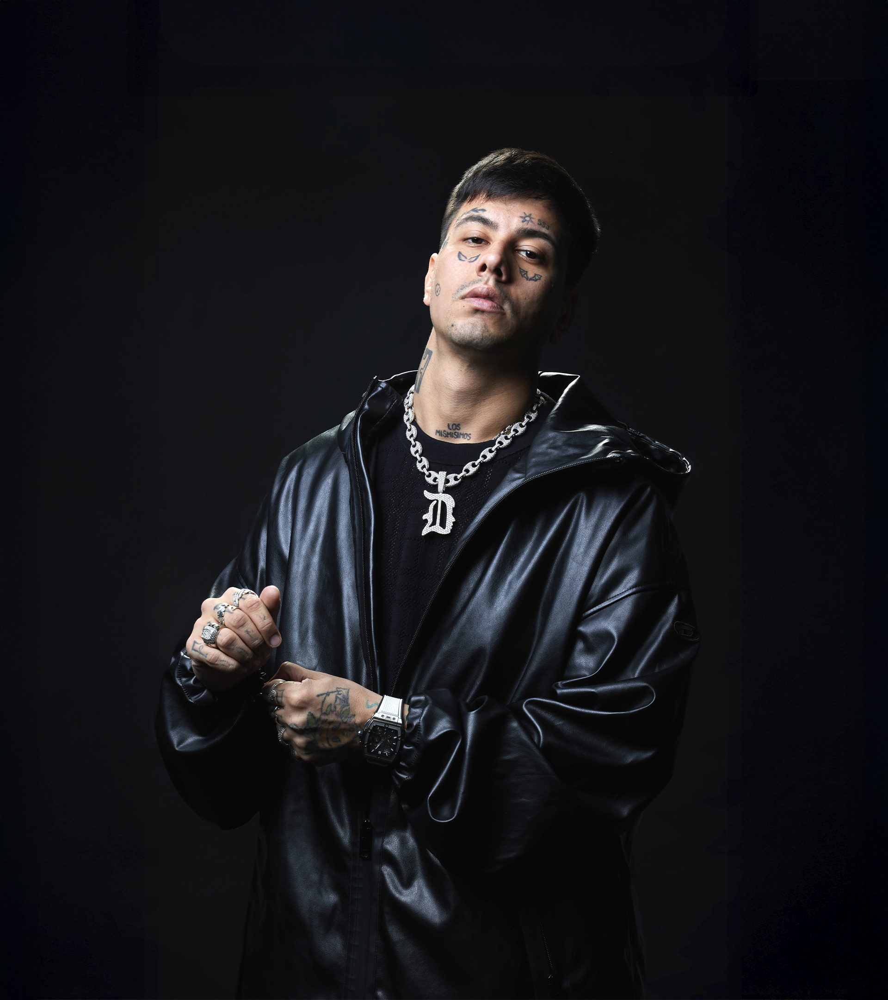
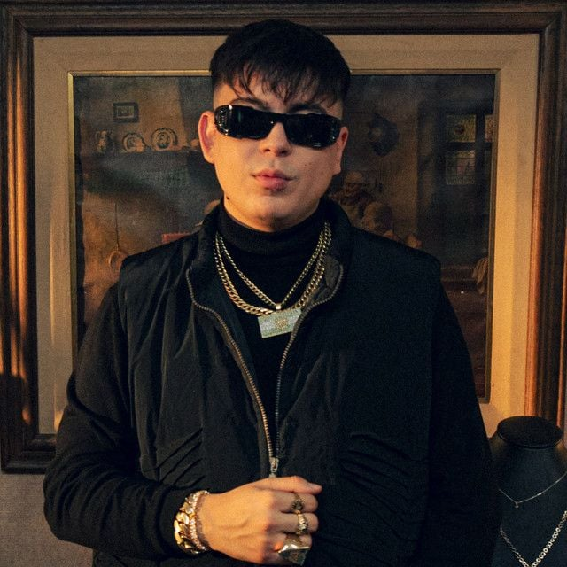

¿Qué es Modo Diablo?
Modo Diablo fue un grupo argentino de trap latino conformado por los raperos argentinos Duki, YSY A y Neo Pistea. A pesar de no haber lanzado ningún álbum de estudio como tal en sus años en actividad, los cinco exitosos sencillos oficiales que lanzaron y sus colaboraciones entre sí lo convirtieron en uno de los actos musicales más importantes para la popularización del trap latino y la cultura del hip-hop en Argentina. Aunque se declararon separados en 2019, todavía continúan tocando en vivo juntos esporádicamente en conciertos de cada uno. Los tres integrantes residieron en una localidad en Villa Crespo, en la dirección Antezana 247, la cual fue descrita por los medios nacionales como "la cuna" del trap argentino...
Duki
Ysy A
Neo Pistea